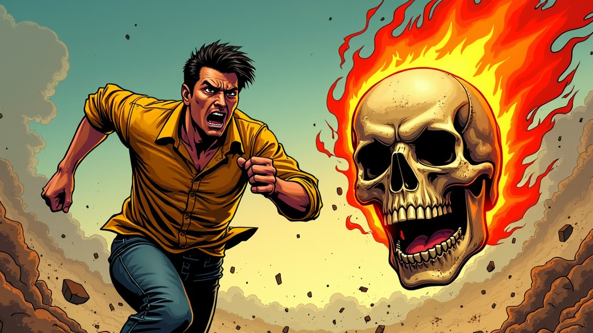

⚡️ PLAY GAME
Game Banaspati terinspirasi dari hantu api Banaspati, Banaspati adalah salah satu sosok mitologis yang terkenal dalam budaya masyarakat Indonesia, terutama dalam cerita-cerita rakyat. Konon, hantu ini muncul dalam bentuk cahaya berapi yang melayang-layang di malam hari, sering kali di tempat-tempat sepi atau hutan. Masyarakat percaya bahwa Banaspati adalah roh dari orang-orang yang meninggal dengan cara tragis, terutama akibat kebakaran atau bencana yang melibatkan api.
Dalam game ini Anda harus berpacu dengan waktu dan menggunakan kecerdikan untuk melindungi Udin dari ancaman Banaspati yang mengintai.